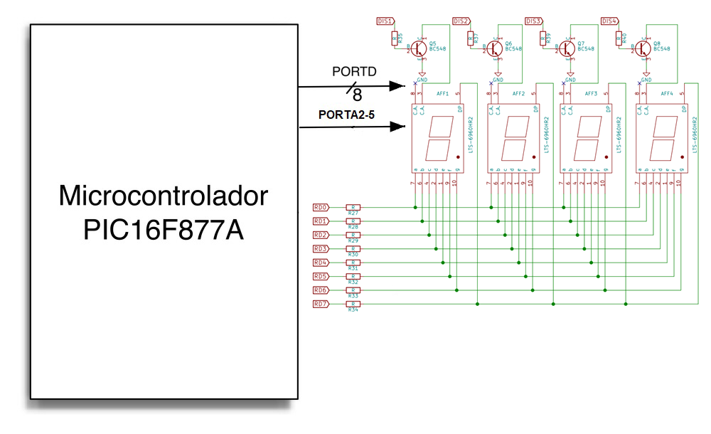

Ejercicio 3: E/S por programa (PIO)
mapeada en memoria
1. Objetivo
El objetivo de este ejercicio es que el alumno escriba un driver de
dispositivo, en BASIC, que permita al PIC16F877A usar los puertos D y A
para
controlar los cuatro displays de 7 segmentos de la placa PicGenios, en
los que deberá hacer aparecer un contador que cuente de 1000 a
0000, usando siempre cuatro dígitos para mostrar el resultado.
2. Sistema de test
La configuración del sistema de pruebas simulador es la
mostrada en la siguiente figura:

4. Necesidad de retardos para la visualización
La UNICA dificultad significativa de este ejercicio es que el alumno
debe tener en cuenta que los displays usan de forma multiplexada el
registro D, y por tanto NO se puede activar simultaneamente más
de un display, ya que todos los que estén activos
mostrarán el mismo valor. En consecuencia, la escritura de los
dígitos en los displays debe hacerse mediante una estrategia de
barrido periódico, en la que:
Cada display es activado, y mantenido encendido, sólo el
tiempo suficiente para que la retina perciba los segmentos encendidos.
Para que nuestro ojo perciba un valor estable en el display, es
necesario refrescar el contenido (es decir, volver a recorrer los
cuatro displays, reescribiendo su contenio) múltiples veces por
segundo.
Esto implica que el código usado deberá utilizar dos
retardos distintos (el que mantiene encendido un display tras
escribirlo, y el que controla la frecuencia del refresco
periódico). El alumno deberá, por tanto, experimentar
hasta encontrar valores que den una representación estable, y
que sean compatibles con el funcionamiento del contador.